Доделка квартиры, 92 м²
Кухня, прихожая, дальняя часть гостиной. Стенку не трогаем. Спальня и детская уже сделаны. Мокрые зоны — следующий заход.
Схема по вашему плану
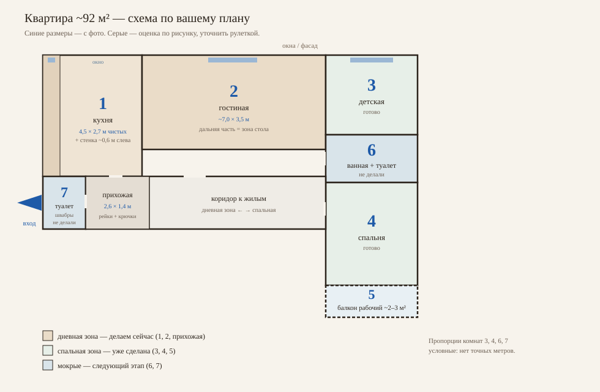
Дневная зона: вход, прихожая, туалет 7, кухня 1, гостиная 2. Спальная: детская 3, ванная 6, спальня 4, балкон 5. Гостиная — транзит в спальное крыло, не комната в тупике.
Гостей сажать в гостиной у окна. Кухню оставить рабочей. Кровать-трансформер в зале — только если ночуют часто; по циркуляции это слабое место.
1. Кухня
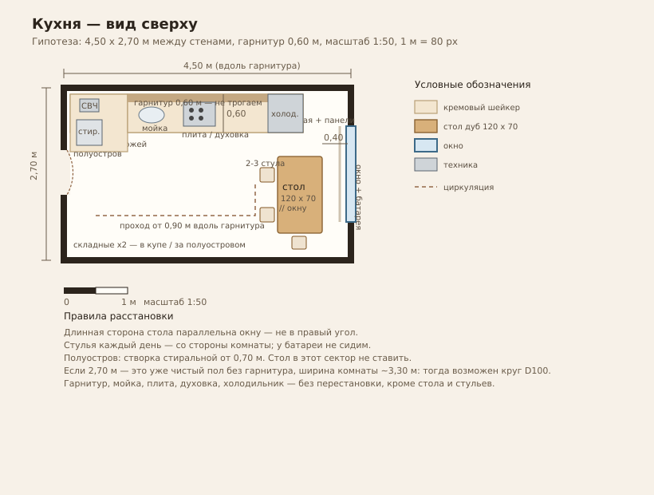
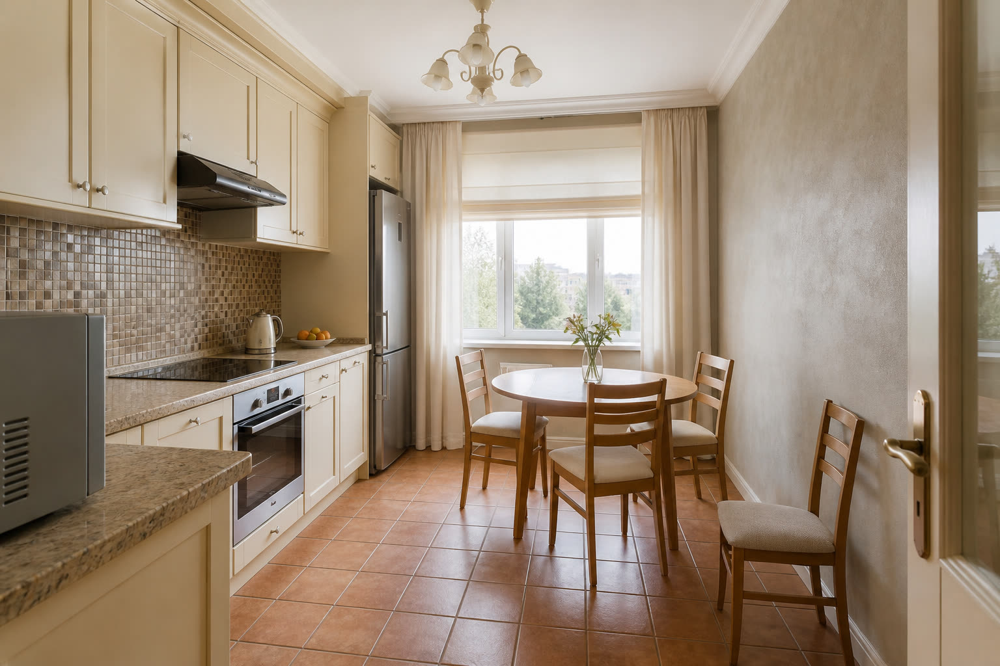
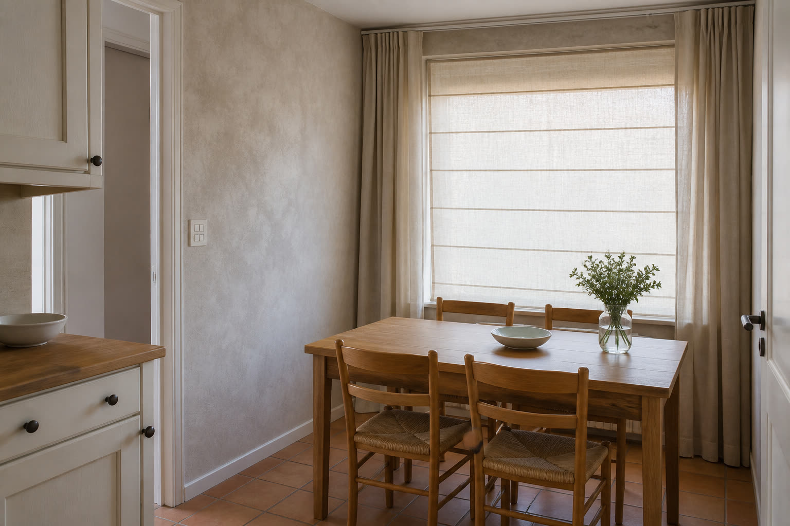
Обои
Не повторять светлый лён с 5-го фото. Нужны виниловые на флизелине, маркировка три волны или щётка, неглубокий рельеф, цвет тёплый грейж. Образец на стену на неделю. Фартук-мозаику не закрывать.
Окно
Потолочная шина + римская штора песок. По желанию две прямые панели, без ламбрекена.
2. Прихожая 2,6 × 1,4
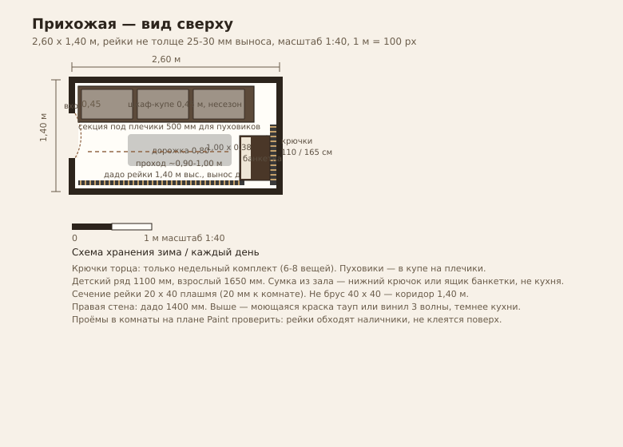
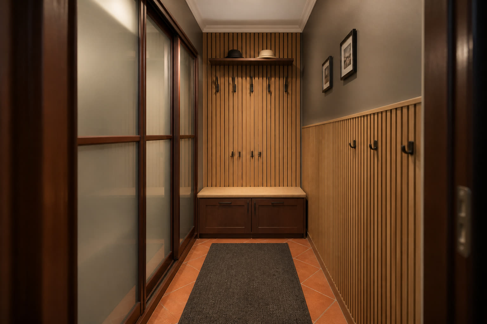
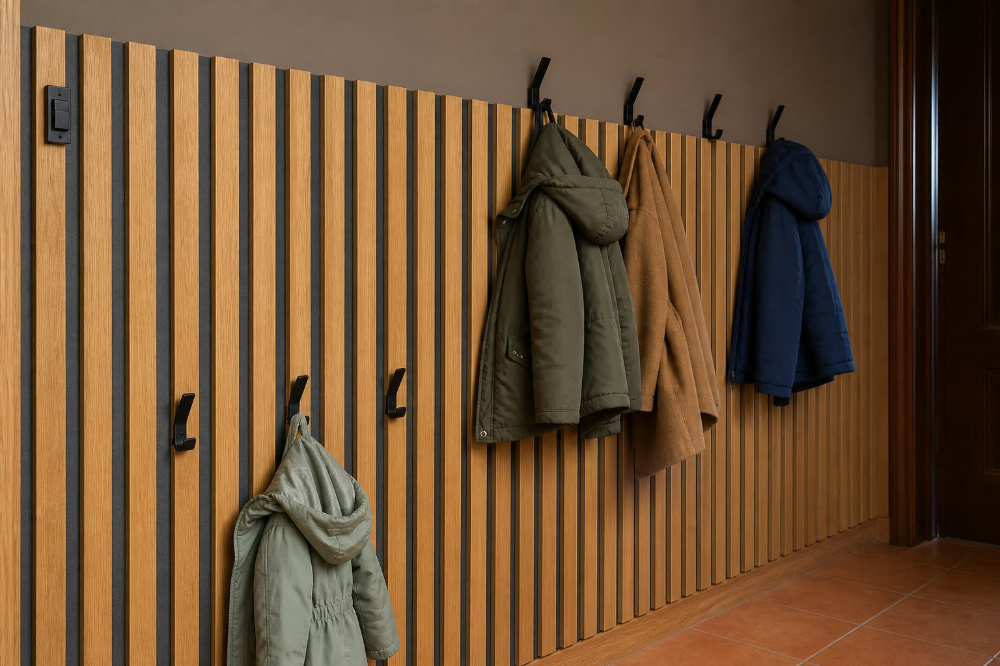
Зима решается ротацией, не количеством крючков: на стене неделя, в купе — сезон. Швабры в санузле 7.
3. Гостиная ~7 × 3,5
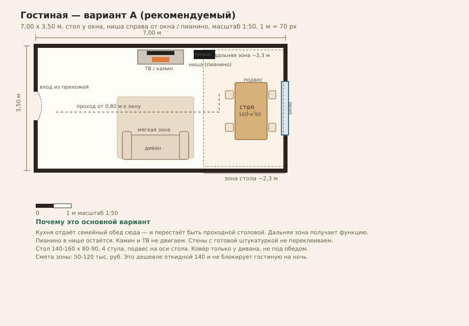
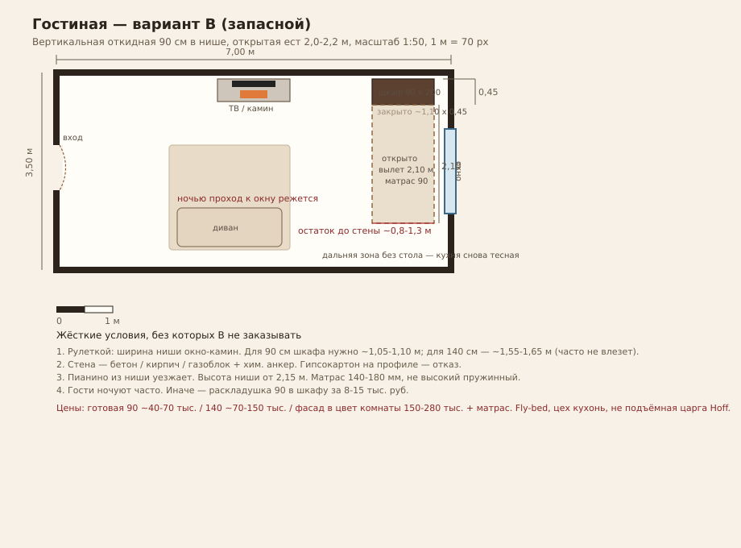
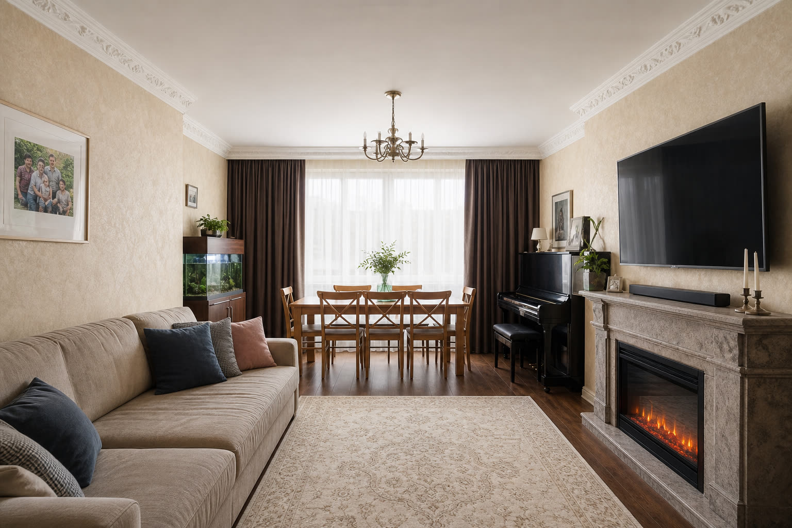
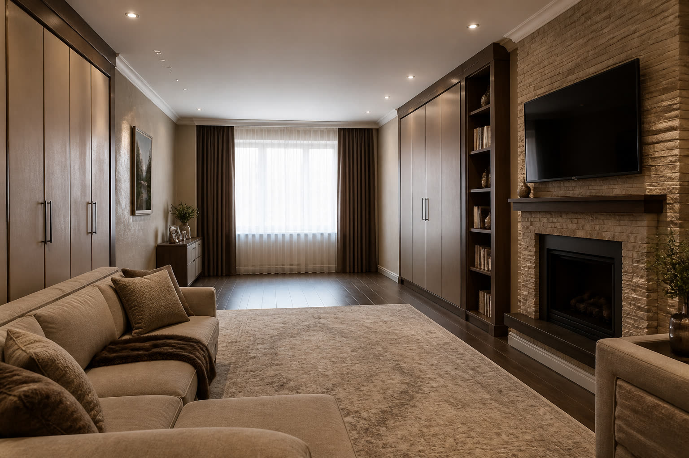
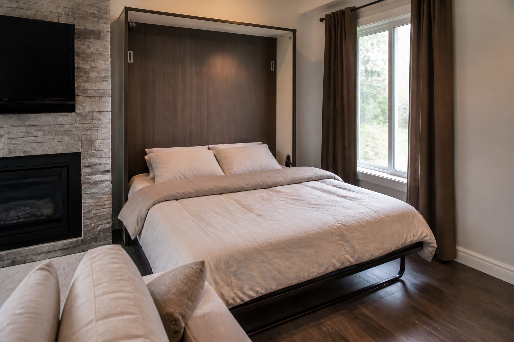
Ниша окно–камин: для 140 нужно 155–165 см ширины шкафа, стена бетон/кирпич, потолок не ниже 220 см. Цена на заказ с фасадом 150–280 тыс. руб. + матрас. Fly-Bed, Rubicks, ваш мебельщик. Не ставить, пока не промерите и не решите, что стол вам не нужнее.
Порядок денег
| Кусок | Ориентир |
|---|---|
| Обои кухня + прихожая, работа | 40–90 тыс. руб. |
| Римская штора + карниз | 15–35 тыс. руб. |
| Стол на кухню + стулья | 25–60 тыс. руб. |
| Стол в гостиную на 6 | 50–120 тыс. руб. |
| Рейки, крючки, обувница | 40–90 тыс. руб. |
| Всё без трансформера | ~180–400 тыс. руб. |
| Шкаф-кровать 140 на заказ | +150–280 тыс. руб. |
Полный текст с закупкой и списком промеров — в DESIGN.md.